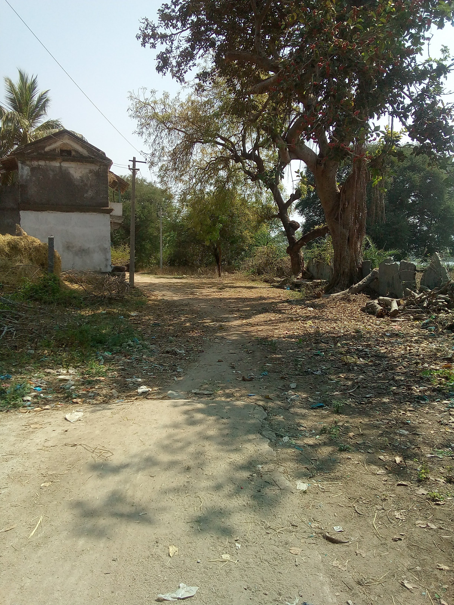
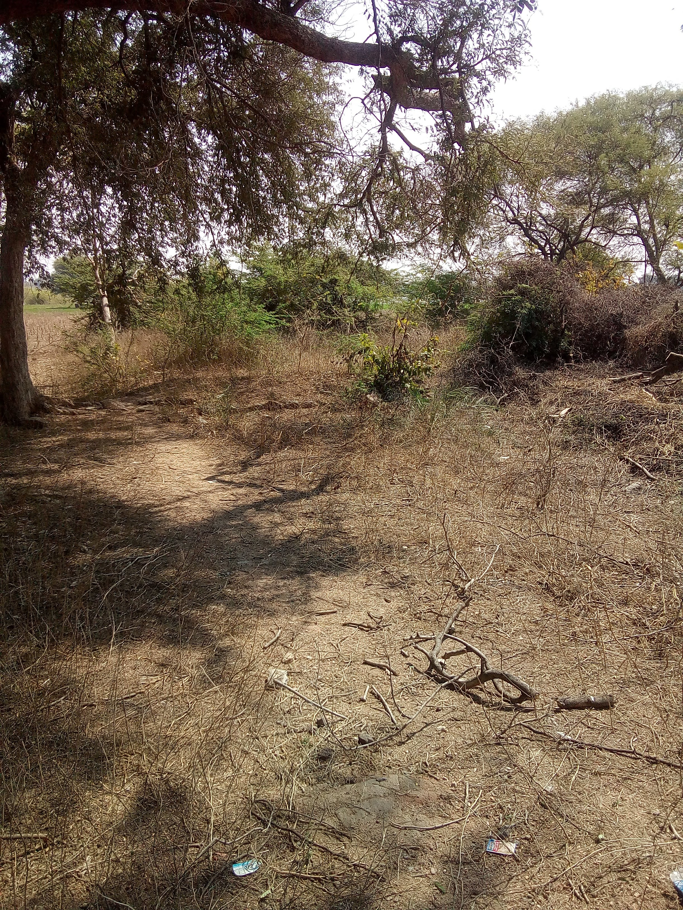
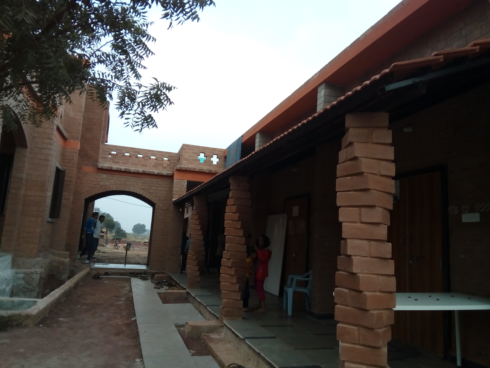
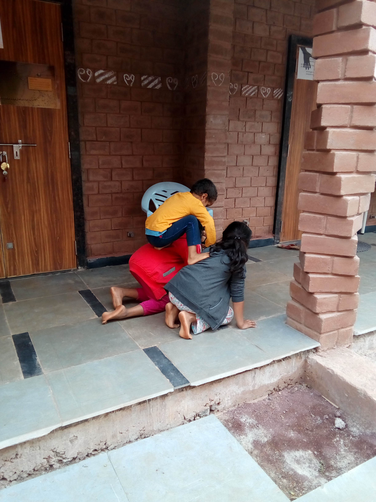
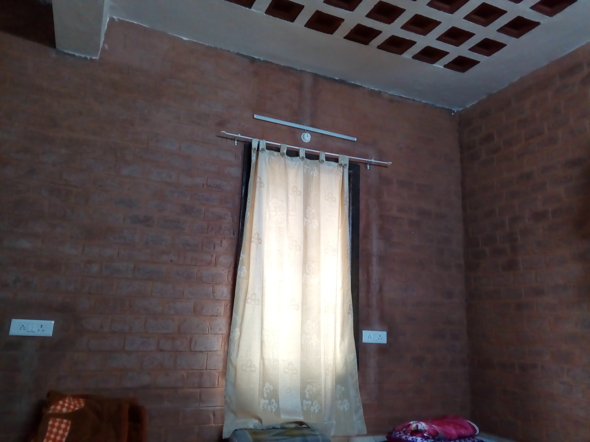
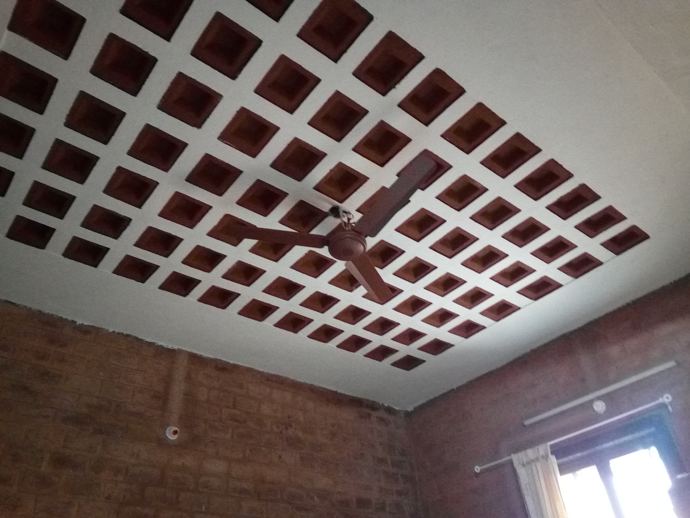
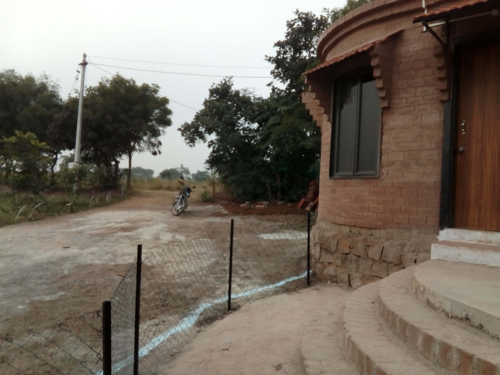

A Library at the Youth Center for Social Leap
Table of Contents
1 Introduction
This document lists every thing necessary in setting up a youth center at Chityal Village, Mahaboobabad district, Telangana.
2 The Idea
I have been visiting my village over the weekends for quite some time for the last few years. The village has a population of around 2500. I go there since we have our ancestral house and a farm. I learned how to farm and I also get involved in it while I am there. During this time, I also try to interact with the school and college students. There is a high school till 10th standard in the village which is pretty decent and the students go to the nearest mandal head quarters - Thorrur - for the college. Most of these conversations end up in a sense of despondency with the students having no clue about their future. What we set upon ourselves is: loose gradually the existing skills while we stop short of gaining proficiency in what we have learned or learning.
This is not a simple problem that we can get away with. One of the first steps is for all us in the community to come together and have a conversation around it and build a platform to nourish solidarity. It is my belief that a library doubling up as a youth center can facilitate such a setting.
Articulation of this conversation is a first step in empowering ourselves. Here, the students bring their insights to various aspects of their living life with respect to sanitation, health, environment, farming, career opportunities, development, employment generation, a critique of the current policies, etc. With few computers at the youth center, we learn how to publish them on web to bring out a magazine. These articles are bundled fortnightly or monthly for print and distribution among the villagers. With such an effort, not only do we start a conversation but also learn skills to write and publish on the web.
The center also brings people from the outside - the city - with certain skills and knowledge to interact with the locals. These interactions can range from helping build computer systems to sell the locally grown produce; talk about practices and techniques in organic farming; teaching or performing arts; laying out different career opportunities and paths to get there, etc.
Once a space is established for collaboration, the possibilities are limitless and the confidence that emanates from self empowerment helps redefine development hinged to 'small is beautiful' to be sustainable, equitable and democratic.
For example, through the skills developed at the center, the community builds a solar power generation and management system using either raspberry pies or arduino boards. At peak generation, the resource - the power generated - is used to charge batteries that run the local transport while at all times a handle to the resource management is maintained. Our hope is myriad such applications and ideas emanate from this space that are totally grounded to solve the local problems.
3 Making it Happen
As we learn and envisage, the end is a process that is evolved through iterations. In the first iteration, we build the center.
3.1 Setting up of an NGO
The name of this organization is Social Leap. There are
different ways to register a non governmental organization.
We either register the NGO as a trust or as a society. I
will post more information once this decision is made.
3.2 The place
I am setting out nearly 2000 sq yards from a piece of land that is in my name. There is a possibility to acquire another 2000 to 3000 sq yards once the project gains momentum and some bearing of fruition. The place is at the far end of street in the picture.

Figure 1: view from the street

Figure 2: The actual place
3.3 The Building
To start off, a 1000 sq ft building will suffice to hold books and a few computers and function as a reading room. This will also include a 10 x 10 sq ft private space that works as an office for the organization. The building structure will allow for another stair on top at a later stage to accommodate a meeting room.
Instead of constructing the youth center the usual way with cement and concrete, the plan is to use the local materials. This effort is also to evangelize the techniques pioneered by Gramavidya, an organization developing alternative and energy efficient construction technologies.
Recently, I visited a place near Hyderabad, where they have built a nice hall and few office rooms using the techniques developed at Gramavidya. All the photos here are from there.

Figure 3: The Hall and the Offices

Figure 4: A closer look at the Hall

Figure 5: Interior and Part Ceiling

Figure 6: Ceiling

Figure 7: The exterior
Gramavidya trains artisans in making the bricks from the local soil available. They conduct workshops year round. The bricks are not baked but pressed using a small hand-operated machine. The soil - either red gravel or clay - is sifted to which 10% cement and some lime is added. The proportions vary a little based on the clay content. Gramavidya will determine these portions once a sample is sent to them. The blocks used for wall are solid while the blocks used in the roof are hollow. By using the hollow bricks for the roof, the amount of reinforced cement concrete used for the slab goes down by almost 50-60%.
By choosing to go this way, the youth center is conceived on strong foundations of sustainability. The construction itself starts generating interest and participation while imparting skills to the community.
4 Costs
This lists out the entire cost for the project. The breakdown is in the below sections.
| S.no | Description | Cost (Rs) | ||
|---|---|---|---|---|
| 1. | Building | 800000.00 | ||
| 2. | Training artisans | 100000.00 | ||
| 3. | Sifting & Pressing Equipment | 200000.00 | ||
| 4. | Furniture | 50000.00 | ||
| 5. | Books | 200000.00 | ||
| 6. | Computers | 50000.00 | ||
| 7. | Maintenance | 100000.00 | ||
| Total | 1500000.00 |
4.1 Building
List the cost for building the facility.
4.1.1 Build Square Feet Rate
From the discussions with the people who have used these techniques, it was suggested that cost for a square feet is Rs 800.
| Rate/sq ft (Rs) | |||
|---|---|---|---|
| 800 |
4.1.2 Constructing the Building
Given the cost per square feet is Rs. 800/-, we calculate the cost for the 1000 square feet building.
| Building Area | Rate | Total |
|---|---|---|
| 1000 | 800.00 | 800000.00 |
4.2 Training the artisans
We will train two people from the village in construction techniques. This will include attending couple of workshops and staying at the site near Hyderabad where such a building is being built for couple of months. At the site from where I posted the images of the building, another house is being built.
| S.no | Description | Cost (Rs) | ||
|---|---|---|---|---|
| 1. | On Site Training | 60000.00 | ||
| 2. | Workshops | 40000.00 | ||
| Total | 100000.00 |
4.2.1 On site Training per Person
On average this includes the travel expenses, lodging and boarding and a monthly salary. This is the cost per person for a month.
| Cost/Person (Rs) | |||
|---|---|---|---|
| 15000 |
4.2.2 Cummulative On Site Training
List the costs for training 2 persons at the construction site.
| No. of People | Rate/month (Rs) | No. of months | Total |
|---|---|---|---|
| 2 | 15000.00 | 2 | 60000.00 |
4.2.3 Workshop Training per person
Grama Vidya conducts workshops in disseminating the information. Typically these are held for 3 - 4 days. There is some information here about a past workshop.
{kind=link}
| Cost/Workshop (Rs) | |||
|---|---|---|---|
| 10000 |
4.2.4 Cummulative Workshop Training
| No. of People | Rate/workshop (Rs) | No. of workshops | Total |
|---|---|---|---|
| 2 | 10000.00 | 2 | 40000.00 |
4.3 Building Equipment
The equipment for sifting soil and pressing bricks.
| S.no | Desc | Cost (Rs) | ||
|---|---|---|---|---|
| 1. | Sifting | 100000 | ||
| 2. | Pressing | 100000 | ||
| Total | 200000.00 |
4.4 Furniture
A conservative estimate would be around Rs 50,000/- for the furniture to stack books, tables, chairs etc.
| Amount (Rs) |
|---|
| 50000 |
4.5 Books
Even if we cost on average each book at Rs. 200/-, for thousand books, this would cost Rs 2 lacs. We would start off with this amount and slowly grow the library.
| Amount (Rs) |
|---|
| 200000 |
4.6 Computers
A few computers, either used or raspberry pies connected to screens.
| Amount (Rs) |
|---|
| 50000 |
4.7 Maintenance and Contingency
This would take care of maintaining the facility for a year and leave some room for contingency.
| Amount (Rs) |
|---|
| 100000 |
5 About Me
My training is in computer science and am currently managing a project - Virtual Labs - funded by Ministry of Human Resources Development at IIIT Hyderabad. I am also conducting the necessary ground work like literature survey, reading and fine tuning the problem for pursuing a PhD. My proposed research will look if there is a role for computer science in aiding worker ownership and pave way for ownership democracy.